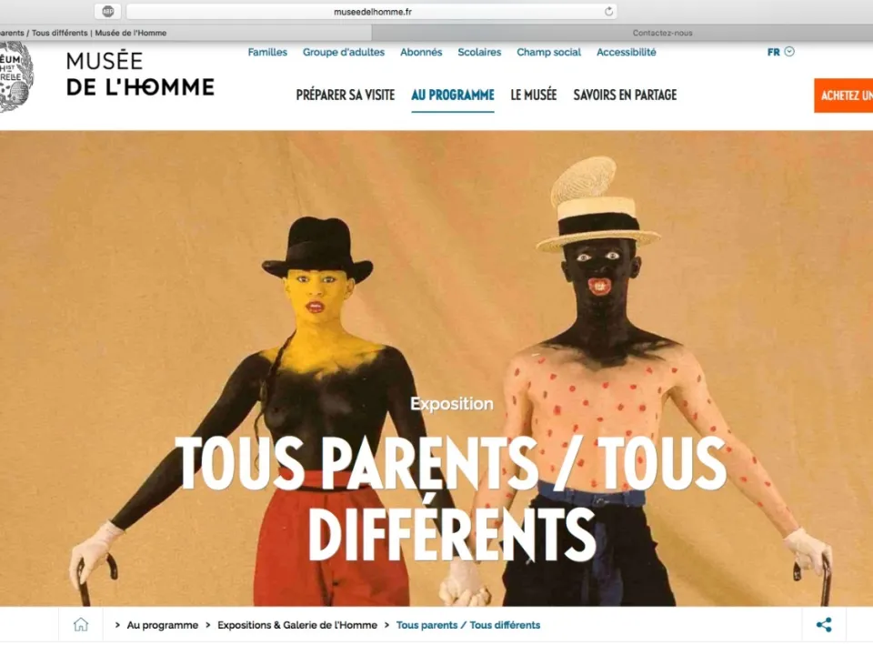

XINGU – PRODUÇÃO ARTÍSTICA | Tous Parents tous différents, exposição aberta ao público
Tous Parents tous différents , exposição aberta ao público de 1990 a 2015 Os anos de trabalho como fotógrafa no Xingu me permitiram reunir um acervo […]